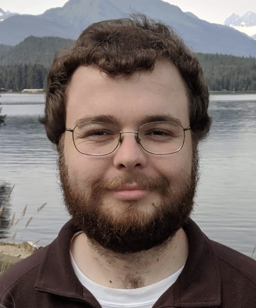
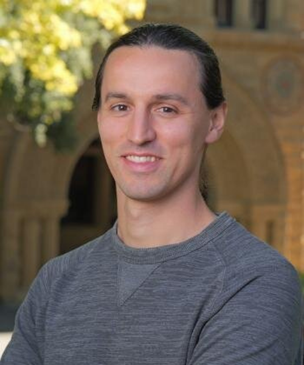
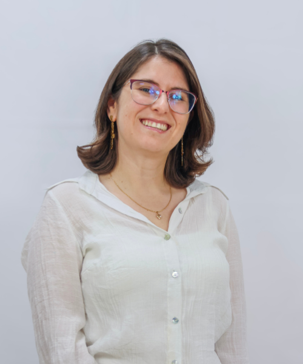
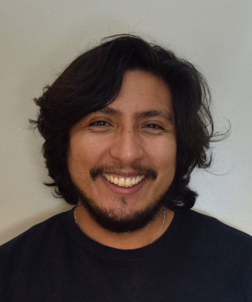
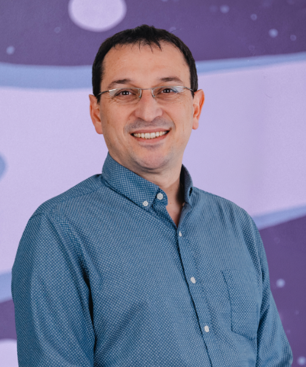

About the workshop
Chile lies on one of the world's most active tectonic boundaries yet access to distributed acoustic sensing (DAS) expertise and infrastructure remains extremely limited in the country. This workshop aims to help close that gap.
Over three days, participants will move from the fundamentals of fiber-optic sensing and work up to a real field deployment on the UdeC campus, followed by full data-analysis pipelines using modern open-source tools and machine learning.
The workshop is designed to democratize knowledge: is free to attend, travel scholarships are available, and we especially encourage applications from underrepresented groups, women, and early-career scientists (ECS).
Supported by the SSA Community Grants Program.
Program
From seismic theory to fiber deployment to earthquake products — participants leave with practical skills and a working toolkit.
Invited speakers
Leading researchers bringing cutting-edge DAS expertise to Chile.


Organizing committee



Travel grants
We believe financial barriers shouldn't prevent talented researchers from participating. Limited travel grants are available.
Travel scholarships are available to support participants from outside Concepción — particularly students, ECS, and members of underrepresented groups who lack access to national or other funding sources.
Priority is given to students and first-generation professionals. Workshop fees are fully waived for all students.
Supported by